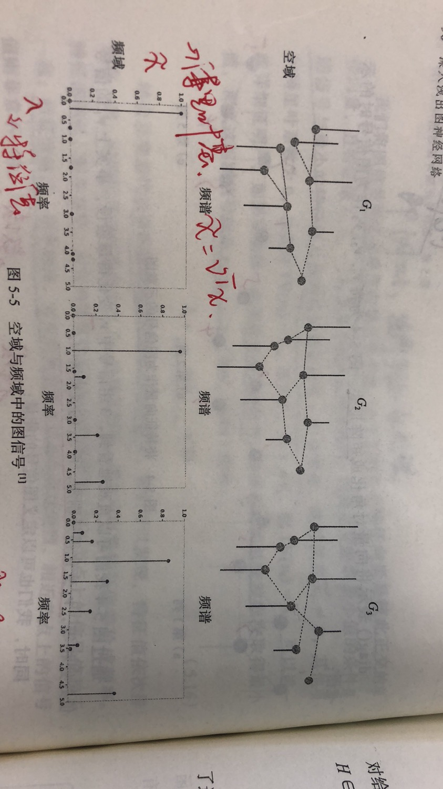

一、图的概述
在图论中，图（Graph）指的许多节点及其相互关系。而我们传统的图像可以看着是一种特殊的图——像素点及其之间的关系。如果有点集$V={V_1,V_2,…,V_n}$
和他们之间的关系边集$E={e_1,e_2,…,e_n}$。那么我们一般用下列数学表达式来表示一个图。
有向图VS无向图
有向图的边具有方向性，$e_{ij}$表示从$v_i$指向$v_j$的有向边。但注意有向图不一定所有边都是有向边。
无向图的边没有方向性。加权图VS非加权图
加权指的是两点之间的边有权重。而非加权图则相当于时权重相等的加权图
连通图VS非连通图
若任意两个节点都有通路，称为连通图。反之则称为非连通图。非连通图中有许多连通分量。连通分量自身是图的最大连通子图。连通图的连通分量是自己。
子图
子图从直观来看是图的裁剪区域。从数学表达来看，子图的边集和点集均为图的边集和点集的子集，即
通路与距离
通路也称路径，对于两个点，他们的通路就是连通它们的边的序列集合。
两点间的距离指的是两点间最短通路的边数。
k阶邻居：指的是两点的距离为k，此时两点互为k阶邻居（无向图）。
k阶子图：指的是任意两点之间距离最大为k的子图。
邻接矩阵VS关联矩阵
邻接矩阵表达的是点与点之间存在连接，即边。关联矩阵表达的是点和边之间存在关联，即点是边的端点。两种矩阵都能够表达图中的关系。
同构图VS异构图
同构图中所有节点的类型都是相同的，边的类型也是相同的。而异构图则不一定。异构图更有现实意义。
二、导数、梯度与散度
2.1 导数
导数反映的$f:X\rightarrow Y$这样一个映射中，$Y$关于$X$的变化速率问题，是一个标量（scalar）概念。对于一维映射，其形式非常简单，即微商：
而对于多维映射，则有偏导数和偏导数。偏导数是相对其中一个维度的导数。
全导数的本质是降维。它将多维统一到一维。
2.2 梯度 (gradient)
其最直接的物理意义代表是速度，是一个矢量（vector）概念。对于一维映射，其值就等于其导数，方向为切线方向。而对于多维空间，则为各个维度梯度分量的矢量和，体现上为偏导数向量组。
2.3 散度 （divergence）
物理意义在于发散源或吸收源的判断，是一个标量概念。对于一个梯度$\triangledown\boldsymbol{f}$的单位区域，散度表示的是净流量的大小。对于一个微小截面$\delta S$和微小体积$\delta V$，设其截面法向量$\boldsymbol{n}$，则有散度定义（单位体积变化率）
代入梯度公式，在n维空间内可转为
对于一个向量场，一个微小区域如果散度大于0，那么显然该处是有发散源，如果等于0，那么显然无源。而小于0，代表是吸收源。例如，一个磁场区域如果没有源，那么磁感线几条进入几条出去，磁通量肯定为0。如果出去多进来少（净出大于0，净速率大于0），那么也就是发散；反之，则为吸收。

参考文献
[1] 如何直观形象的理解梯度
三、矩阵、特征值与特征向量
3.1 矩阵运算
哈达玛积
对应位置元素相乘。对矩阵$A{m \times n}和B{m \times n}$，有
3.2 正交矩阵
正交矩阵（必须是方阵）的列向量组是一组标准正交基。标准正交基其实就是n维向量空间内两两正交的一组单位向量。即$A=(e_1, e_2, …, e_n)$。正交矩阵具有以下特性：
3.3 特征值、特征向量及特征方程
我们知道在差分方程和微分方程中有特征值的概念，它是方程组的稳定性分析的基础概念。在矩阵中，同样具有特征值。
对n阶方阵A，存在数$\lambda$和n维非零列向量$x$，满足
则称$\lambda$为特征值，而$x$为对象的特征向量。(3-2)式可以转化为
而对于上述方程，有
方程(3-4)称为矩阵A的特征方程。$|A-\lambda E|$称为矩阵A的特征多项式。当$\lambda \in C$（复数集）时，对n阶方阵A，必然存在n个特征值$(\lambda_1,\lambda_2,…,\lambda_n)$（重根得重算）。且有
注意零矩阵的模为0，但为模为0不一定是零矩阵。因此，代入特征根，可以求得对应的非零向量$x$，即特征向量。
3.4 相似矩阵
设$A、B$都是$n$阶方阵，若存在可逆矩阵$P$，有
则称矩阵A与矩阵B相似，可逆矩阵P被称为相似变换矩阵。对于相似矩阵，容易证明具有相同的特征方程和特征根。
当相似矩阵为对角矩阵$\boldsymbol{\Lambda}$
则主对角线的值即为特征值。设对应的相似变换矩阵列向量组为$P=(p_1,p_2,\cdots,p_n)$。可以证明该列向量组为对应的特征向量。
而这样一个变换，称为对角化。其核心问题是能否对角化，相似变换矩阵P怎么求。
3.5 对称矩阵的对角化
对于一个方阵$A$，若满足$A=A^T$，即称为对称矩阵。容易证明，对称矩阵的特征向量必然两两正交。且有定理说明一个实对称矩阵必能被正交对角化，即必然存在正交矩阵$P$，有
其中$\Lambda$为对角矩阵。
四、图傅里叶变换
4.1 拉普拉斯算子
拉普拉斯算子用于表示n维欧式空间中f的梯度$\bigtriangledown f$的散度，是二阶微分算子。对于二维空间，简化为
而从差分近似的角度，有
从而有
转化为卷积核，有
可以看到元素总和为0。利用拉普拉斯算子做图像处理，可以得到图像的散度矩阵，它描绘了像素与周围的差异大小，因此该算子常用于边缘检测（和之前的Sobel算子类似）。
4.2 拉普拉斯矩阵
对于一个图$G=(V,E)$

$A$为其顶点之间的邻接矩阵。
一个顶点的度$\text{deg}(v_i)$指的是一个顶点$v_i$的连接总数。对于有向图，度可以分为出度和入度。以顶点的度构成的对角矩阵称为度矩阵$D$。
而拉普拉斯矩阵的定义为
用数学公式直接表达，其元素级别为
用$\sqrt{\text{deg}(v_i)\text{deg}(v_j)}$进行归一化，其元素级别为
可以看到不论是按行还是按列压缩求和，和都为0。
拉普拉斯矩阵是拉普拉斯算子在图上的离散推广，又称离散拉普拉斯算子。拉普拉斯算子在图像处理中考虑了当前像素点和相邻像素点（4个）的关系，而拉普拉斯矩阵则考虑了图数据中相邻节点的关系。对于节点空间$V$和节点属性值空间$X$，存在映射$f:V\rightarrow X$，则其拉普拉斯矩阵运算为对应属性值的散度向量，每个维度代表对应节点的散度值。
上式中每个元素其实就是该节点与相邻节点的差的总和。
进一步我们可以得到图的总变差$TV(x)$，即散度与值的乘积再求和。
上式转化很好理解，对应任意$x_i(x_i-x_j)$项，总对应存在$x_j(x_j-x_i)$项，提取合并同类项后即为$(x_i-x_j)^2$。$E$是关联边集。总变差刻画了图信号整体平滑度。总变差是散度向量的加权求和。
4.3 图傅里叶变换的定义
众所周知，傅里叶变换将空域信号转换到频域信号，在信号的去噪、压缩和重构等任务上发挥着巨大的作用。在这里，类似的有图的傅里叶变换。
显然，一个拉普拉斯矩阵是一个实对称矩阵，可以被正交对角化，即
其中V为正交矩阵，$\Lambda$为对角矩阵，而V的列向量就是特征向量，它们是线性无关的单位向量，而$\lambda$则为对应的特征值。我们对特征值进行升序排序。此外根据总变差$\sum_{v_j\in N(v_i)}(x_i-x_j) \ge 0$，可知拉普拉斯矩阵为半正定矩阵，特征值均不小于0（半正定矩阵的充要条件）。且可以证明对于拉普拉斯矩阵，最小特征值$\lambda_1 = 0$。
我们将$V=(v_1,v_2,\cdots,v_n)$的每一个特征向量称为傅里叶基。对于图G上的任意信号$\boldsymbol{x}=[x_1,x_2,\cdots,x_n]^T$，其元素级别的图傅里叶变换（Graph Fourier Transform, GFT）为：
即与特征向量$v_k$的内积。其矩阵级别为
由于$V$为正交矩阵，故有如下逆图傅里叶变换：
因此，拉普拉斯矩阵的特征向量实际上是n维空间的一组标准正交基。而任意图信号均可以由这组基进行线性组合表示。系数称为傅里叶系数。
4.4 空域到频域的转换
对于一个图信号$\boldsymbol{x}=[x_1,x_2,\cdots,x_n]^T$，我们定义其$L_2$范数为整个图信号的能量。则有
在这里，$x$的$L_2$范数是空域信号（图上的），而傅里叶系数$\tilde{x}$的$L_2$范数是频域信号。为什么傅里叶系数代表了频域信号，且看下文。
如前可知，总变差$TV(x)$描述了一个图的信号平滑度，不同图信号的总变差往往是不一样的（有点类似指纹h）。我们可以通过简单推导知道总变差与特征值之间的关系：
在进行分析时，需要先将图信号$\bm{x}$进行归一化处理：
此时由(4-18)，有$\sum_{i=1}^n \tilde{x}_i^2=1$。前面说过我们对特征值进行了升序处理，因此易得
当$\bm{x}=\sum_{i=1}^n \tilde{x}_i \bm{v_i}=\pm\bm{v_1}$，即$\tilde{x}_1=\pm1$时，等号成立。
将傅里叶系数和特征值构建一个离散谱图，那么特征值就是一种等效频率，傅里叶系数则是频率信号强度。低频率时总变差小，图信号变化越缓慢。从而进行从空域到频域的转换。如图看到$G_1$的信号平滑，频率信号主要分别在低频段。

参考文献
五、图滤波器
图率波器从空域角度讲，就是对每个顶点信号的调节。从空频域角度讲，就是对频率强度的处理，或突出高频，或突出低频，或进行调和。
定义图滤波器$H \in R^{N\times N}$，映射$H:R^N \rightarrow R^N$：
则有如下滤波运算
即对顶点信号强度进行了调节，调节系数和特征值有关，即频率响应函数$h(\lambda)$。事实上，我们可以看到图滤波矩阵$H$与拉普拉斯矩阵$L$唯一的区别在于中间的对角矩阵。因此容易知道，它们具有相同的矩阵结构特征：（1）它们都是实对称矩阵；（2）即当且仅当顶点i和顶点j相关联或相同时，对应值为0（决定相乘为0的数是0，而对角值不为0）。因此，拉普拉斯矩阵本身也是一个特殊的图滤波矩阵（图位移算子）。图滤波有下列性质
- 线性：$H(x+y)=Hx+Hy$。这其实就是矩阵相乘的分配律
- 顺序无关：$H_1(H_2x)=H_2(H_1x)$，容易证明，$H_1$和$H_2$是可交换矩阵。
- $h(\lambda)\ne 0$，则滤波可逆。显然，分母不能为0。
不同的频率响应函数$h(\lambda)$对应了不同类型的图滤波器。
- 低通滤波：顾名思义是低频率能通过，高频率为归零。关注平滑部分。
- 高通滤波：反之，关注突变部分。
- 带通滤波：只通过感兴趣的频段。
如前，滤波器和拉普拉斯矩阵存在的联系，因此我们可以两者看做一种映射$f:L \rightarrow H$。通过泰勒展开，保留前$k$项，有：
通过调整系数向量$\bm{h} = (h_1,h_2,\cdots, h_k)$，拟合出任意图滤波器。
5.1 空域角度
将(5-3)代入5-2，有
不妨假设第k项
则有
显然从$\bm{x^{(k-1)}}$到$\bm{x^{(k)}}$需要用拉普拉斯矩阵进行一次变换，涉及所有一阶邻居（根据公式4-11）。而从$\bm{x^{(0)}}$到$\bm{x^{(k)}}$，需要经历k次变换，故最终结果涉及k阶子图所有节点。因此图滤波在空域上有如下特性：
- 局部性，每个节点的输出至于其k阶子图相关，类似卷积运算卷积核。
- 可迭代，基于公式5-5，显然可以通过迭代运算快速完成。
上述推导中利用了拉普拉斯矩阵$L$，但实际上$L$可以用其他图位移算子代替，任何图位移算子都可以对$L$进行泰勒展开，由泰勒展开的线性可逆性，同样可以用其他图位移算子。即
由于空域计算是迭代运算，我们一般也把$H_1$称为图滤波器（虽然前面一开始是用$H_2$）推导的。
5.2 频域角度
其中
即响应函数$h(\lambda)=\sum_{i=1}^k h_k \lambda^k$。那么频域视角下，有
即滤波过程分为三步
- 空域转频域
- 频率强度调节：利用$\Lambda_h$
- 频域转空域
滤波过程中第二步的$\Lambda_h$可以用范德蒙矩阵$\Psi$和系数向量$\bm{h}$表达。
diag运算将向量转为对角矩阵。其中范德蒙矩阵由特征值定义：
通过逆运算也可以求出系数向量。
相比空域视角，频域视角对滤波过程更加清晰，且可以显式指导滤波器设计。但是特征分解更加耗时，时间复杂度较高，$O(N^3)$。
六、图卷积神经网络
6.1 图卷积
卷积定理
函数卷积的傅里叶变换是函数傅里叶变换的乘积。
图卷积的基础定义
在CNN中，卷积运算是一个权重矩阵（卷积核）与输入的信号的哈达玛积的和。即$\text{sum}(\bm{w}\odot \bm{x}) + b$。类似的，图卷积（GC）是一个输入信号$\bm{x^N}$和“权重”信号$\bm{w^N}$，转到频域后求哈达玛积再转回空域。
GFT是图傅里叶变换，从空域转频域；IGFT是逆图傅里叶变换，从频域转空域。上式代入具体变换公式，有
卷积也称滤波，从上述推导，我们可以看到，图卷积的本质就是图滤波。事实上，公式6-2是更为常用的图卷积计算形式。
图卷积的通道
在图像处理中，图片的输入往往是NCHW形式，其中C指的是图像的通道数，每个通道是图像的不同色域特征。类似的，一个图$G=(V,E)$中的每个节点，也会存在多个通道，就如一个人会有身高、体重等多项指标。因此，输入信号从向量转为矩阵，即$x^N \rightarrow X^{N \times D}$，其中D为通道数。此时，图卷积计算变为$H:X^{N \times D} \rightarrow Y^{N \times D}$，即
6.2 以频率响应矩阵为学习参数
以频率响应矩阵$\text{diag}(\tilde{\bm{w}})$为学习参数，同时类比卷积神经网络引入激活函数，有以下基本图卷积：
上式中$\sigma$是激活函数，而频率响应矩阵的值就是待学习参数。实际上，真实训练中只优化前k个低频参数。因为高频段信息较少，且节点数量太多不可能参数一样多。
6.3 以多项式系数为学习参数
前面介绍了图滤波器的泰勒展开，里面有多项式系数向量$\bm{h}=[h_1,h_2,\cdots,h_k]^T$，由公式5-10和5-11，同理推广至多通道并引入激活函数，有
前面说过。这里的参数量有阶数k决定。阶数越高，所涉及的邻近节点越多（k阶邻居）。一般$k << N$，防止过拟合。
6.4 固定图滤波器——GCN
多项式法虽然大大减少了参数量，但是需要特征分解求特征值，计算复杂度高。为此，人们又做了简化。
首先，固定阶数k=1，即
再固定系数均为1，即
对$\tilde{L}$进行归一化为$\tilde{L}_{sym}$，即
此时固定了滤波器，滤波器相当于一个固定的特征提取算子。那么此时训练学习什么？为此人们引入了权重矩阵$W^{d \times d’}$对输入$X^{N \times d}$做仿射变换（即$Ax+b$），训练的参数就是权重矩阵。权重矩阵与卷积核类似，将一个节点的特征（即前面的通道）进行整合，即$d \rightarrow d’$。
上式就是图卷积层（GCN layer）的计算公式,由此而来的就是就是图卷积神经网络。
七、基于空域的图神经网络
7.1 距离空间
对于一个非空集合$X$，对于$\forall x, y \in X$，$d(x, y)$表示两个元素之间的距离，其满足三大公理：
- 非负性：$d(x, y) \ge 0$，当且仅当$x = y，d(x, y)=0$
- 对称性：$d(x, y) = d(y, x)$
- 三角不等性：$d(x, y) \le d(x, z) + d(z, y)$
特称非空集合$X$为距离空间，记为(X, d)。也称度量空间。
7.2 压缩映射
$T: X \rightarrow X$为距离空间$(X, d)$的一个映射，满足$\exist q \in [0,1), d(T(x), T(y)) \le q d(x, y)$，称T为压缩映射，q为压缩常数。即映射后的距离小于映射前。
7.3 巴拿赫不动点定理
该定理说的是，在一个完备度量空间中，一个压缩映射$T$，有且仅有一个$x^$，满足$T(x^)=x^*$，即